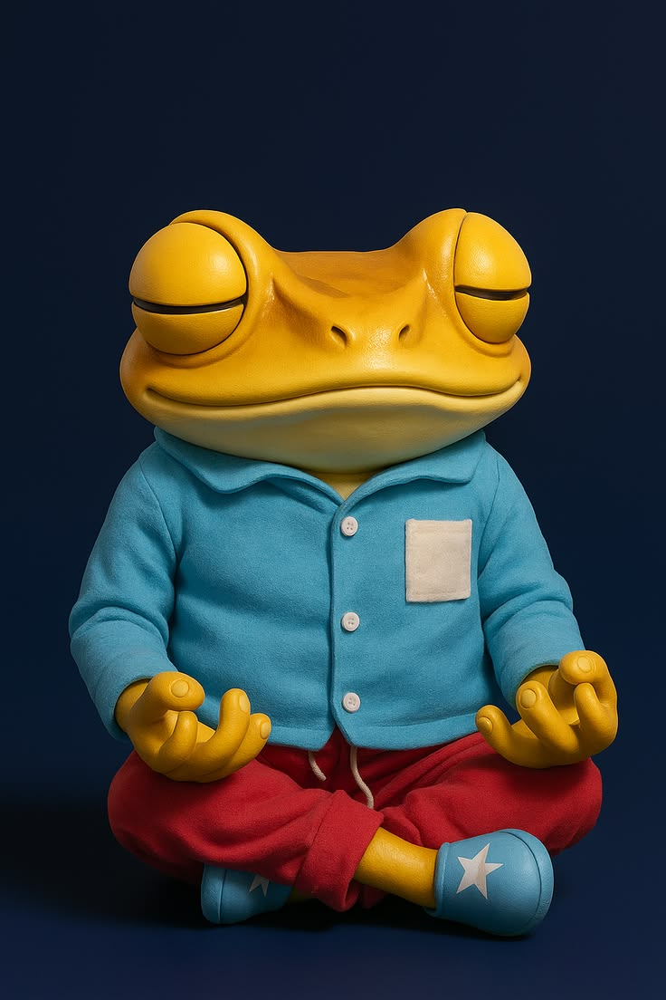

MÚSICA
Los artistas urbanos más escuchados del momento
Descubre las últimas tendencias musicales y los artistas que continúan dominando plataformas digitales, conciertos internacionales y redes sociales.

Álvaro Díaz
Álvaro Díaz continúa creciendo dentro de la música alternativa latina
El artista puertorriqueño sigue destacando gracias a su estilo innovador y sus nuevos proyectos musicales.
Leer más
Rauw Alejandro
Rauw Alejandro mantiene el éxito de la música urbana internacional
El cantante continúa conquistando a millones de fans con nuevos lanzamientos y conciertos mundiales.
Leer más
Bad Bunny
Bad Bunny rompe récords en plataformas digitales
Sus nuevos lanzamientos continúan dominando listas internacionales y redes sociales.
Leer más